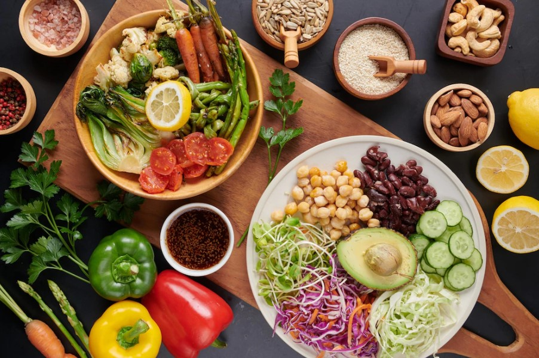

Esporte
Abel Ferreira é o técnico com mais cartões no Brasil desde que chegou ao Palmeiras;
Com 50 cartões (42 amarelos e 8 vermelhos) em 211 jogos, Abel Ferreira é o técnico com mais cartões no Brasil desde que chegou ao Palmeiras, em 2020. Já o também português António Oliveira é quem tem a maior média de punições recebidas por jogo no período, com um cartão a cada 3,4 partidas - Abel tem a média de uma punição a cada 4,2 jogos. António recebeu 23 amarelos e três vermelhos em 88 jogos.
Ver mais.Política
Moção de Repúdio à visita de Nicolás Maduro ao Brasil é aprovada
Colegiado da CREDN aprova Moção de Repúdio pela visita do Presidente da Venezuela ao Brasil. O Governo de Nicolás Maduro é acusado de violações sistemáticas dos direitos humanos e ruptura da ordem democrática
Brasília – A Comissão de Relações Exteriores e de Defesa Nacional (CREDN) aprovou, nesta quarta-feira, 31, Moção de Repúdio à visita oficial ao Brasil do presidente da Venezuela, Nicolás Maduro, no dia 29 de maio. A iniciativa é dos deputados Marcel van Hattem (NOVO-RS) e Eduardo Bolsonaro (PL-SP).
Segundo van Hattem, “a vinda do ditador Nicolás Maduro ao Brasil sinaliza grave mensagem do nosso país no cenário político internacional. No mínimo, omissão e complacência do atual Governo brasileiro com o regime ditatorial, corrupto e opressor que por ele é mantido na Venezuela. Não é demais lembrar os incontáveis desrespeitos aos direitos humanos e a destruição do Estado de Direito na Venezuela”, explicou o deputado.
Ver mais.Economia
Ibovespa fecha com 117.019 pontos, 7ª semana seguida no azul; dólar registra menor valor em um ano
Destaque da semana ficou com a menor cotação da moeda americana desde o dia 7 de junho de 2022, fechando em R$ 4,87

O Ibovespa teve sua sexta sessão de alta seguida nesta sexta-feira (9), com a manutenção do otimismo doméstico após o feriado de Corpus Christi, o que ajudou a trazer fluxo de investidores estrangeiros à bolsa. Petrobras e Banco do Brasil foram as maiores influências positivas ao índice. Vale, que reverteu alta de mais cedo, e Weg ficaram na ponta oposta. Índice de referência do mercado acionário brasileiro, o Ibovespa, subiu 1,33%, a 117.019,48 pontos. Na máxima, marcou 117.602,97 pontos. O volume financeiro somou R$ 29,3 bilhões. Na semana, o Ibovespa avançou 3,96%. Esta é a sétima semana seguida em que o índice acumula desempenho positivo, maior sequência desde o final de 2020. “Acreditamos que o desempenho forte do índice hoje é um prolongamento do movimento de alta dos últimos dias”, disse o analista Luis Novaes, da Terra Investimentos.
Ver mais.Cultura
Forró: Do Nordeste para o Mundo
O forró surgiu em meados da década de 1930, popularizando-se por volta dos anos 1950 por todo o Brasil através do poeta, cantor e compositor Luiz Gonzaga (1912 -1989), que convencionou o formato do trio de forró composto pelos instrumentos musicais sanfona, zabumba e triângulo. Outros fatores como a migração nordestina para o sudeste, a divulgação midiática nas rádios e o interesse comercial das gravadoras, contribuíram para a popularização do estilo musical.
 Ver mais.
Ver mais.
Saúde
Mundo deve se preparar para surto mais mortal do que a Covid-19, alerta chefe da OMS
A Organização Mundial da Saúde (OMS) lançou uma rede global para prevenir doenças. A Rede Internacional de Vigilância de Patógeno tem como objetivo melhorar sistemas de coleta de amostras, usando dados que possam contribuir para políticas públicas, facilitar o processo de decisão por gestores, além de compartilhar informações de maneira mais ampla entre a comunidade científica.
Ver mais.Moda
Carol Dieckmann se joga na sombra colorida, trend vista no SPFW
Carolina Dieckmann apostou em sombra colorida, com muito vermelho, para seu show musical "Karolkê", no Rio de Janeiro, nesta segunda-feira (5). A atriz, que canta e toca durante a apresentação alegre e descontraída de músicas, acompanhada pelo público, caprichou no make dos olhos. Aliás, uma ótima opção para quem quer participar da Parada LGBTQIA+, que acontece no próximo domingo (11), em São Paulo.
Ver mais.Signo
Previsões do mês para os signos
Confira as previsões astrológicas para cada signo.
Ver mais.Filmes
Vin Diesel anuncia data de estreia de Velozes e Furiosos 11
Pouco após a estreia de Velozes e Furiosos 10, que marca o início do fim da saga de Dominic Toretto nos cinemas, Vin Diesel anunciou a data do 11º filme.
Ver mais.Tempo
Previsão para 15 dias Mata de São João - BA
Sol com muitas nuvens durante o dia. Períodos de nublado, com chuva a qualquer hora.
Ver mais.Alimentação
Alimentos saudáveis: destaque para a saúde e para as vendas internacionais
Seja no Brasil ou no exterior, o setor de alimentos saudáveis tem se destacado mais a cada ano, ao passo que os consumidores se preocupam mais com suas necessidades nutricionais e buscam adotar um estilo de vida mais compatível com seu bem estar físico e mental.
 Ver mais.